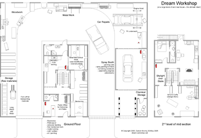

Web Links Example
This is version 0.1 of a simple application to demonstrate how to use various elements in a web application. It shows how to:
Read more...
Self Sufficient Data Centre

Multiple small robots containing different types of storage can join together and actively move out of danger. They receive encrpyted backup data streams and can remotely restore data.
- Caterpillar design allows units to move across land and bury/hide in sand or water
- each cell has multiple methods of data storage
- each cell is self contained for redundancy
- solar power charges lithium batteries (or whatever is best at the time)
- data is spliced across multiple caterpillars to avoid a single device giving up information
- all data is redundantly backed up across 5-9 c
Read more...
Dream Workshop

A shed is essential for building stuff, fixing bikes, etc but when you like trying lots of different things it can get very crowded and often you get wood chips mixed in with your electronics project and vice versa.
{kind=link}
So I thought what would be my idea workshop, it takes into account the various 'areas' you work on and tries to keep them separate.
A large U shape driveway goes through it, so deliveries are not a problem and that space would be used otherwise for building big projects. It starts with the storage area for wood, metal, etc and then is the Wood and Metal areas as these
Read more...
Cooking Chart
{kind=link}
This is the first flowchart in a series of cooking cheatsheets. Based on baking with the 4 essential ingredients: flour, eggs, milk and butter, it shows a flowchart on how these items can be combined to produce the vast variety of dishes.
Zombie Proof House
This week we are looking at what sort of things you can do to design a house which is protected from zombie attacks. While not practical, it shows up some interesting methods and design tips to consider.
{kind=link}
Key Design Requirements
The first thing to think about is the site - it should be on a hill with clearly visible views from all sides. The slope should be as steep as possible on all three sides exce
Read more...